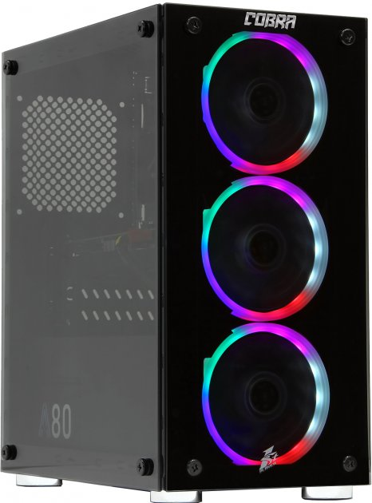

Про нас
Опис компанії:
Комп'ютер вже давно перейшов з предметів розкоші у
категорію найважливіших технічних засобів. З його
допомогою ведеться бізнес, на будь-яку відстань
передаються блоки необхідної інформації, здійснюється
зв’язок з рідними та друзями, що знаходяться в іншій
точці земної кулі, за ним проводять години дозвілля.
Незалежно від того, для яких цілей ви збираєтесь
придбати комп'ютер, для його вибору слід віднестись
дуже серйозно, адже коштує така техніка недешево, та й
користуватися нею ви будете не один рік. Тому при виборі
ПК слід враховувати всі нюанси – від виробника до
характеристик кожної комплектуючої.
Основною метою AplsPC є вийти на український ринок
Додаткова інформація
Наше гасло звучить так: Швидше, Практичніше, Красивіше
Перша сборка Пк
Компьютер Cobra A31.8.H1S2.166.005

Видеокарта - GeForce GTX 1660
Процессор - Четырехъядерный AMD Ryzen 3 3100 (3.6 - 3.9 ГГц)
Чипсет материнской платы - AMD A320
Объем оперативной памяти - 8 ГБ
Друга сборка ПК
IT-Blok Комп'ютер i5-9400 GTX 1050 Ti R1
Процесор - Core™ i5 9400F
Відеокарта - GeForce GTX 1050 Ti
Об'єм HDD - 1000 Гб SATA III
Об'єм пам'яті - ОЗУ 16 Гб